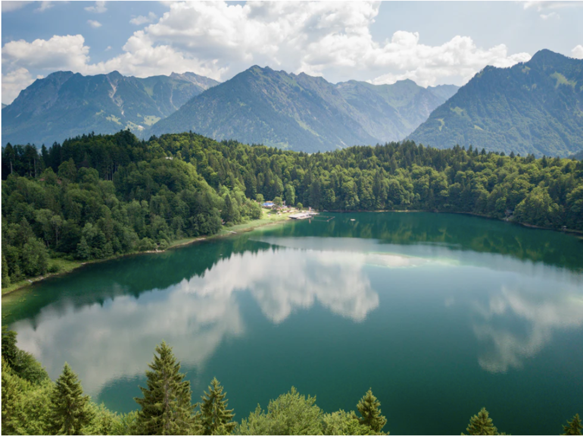
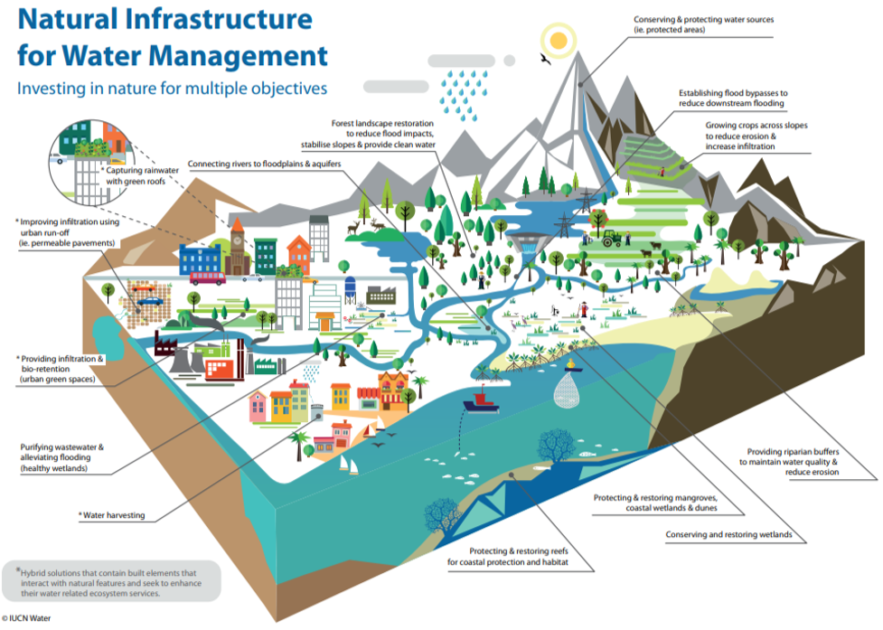
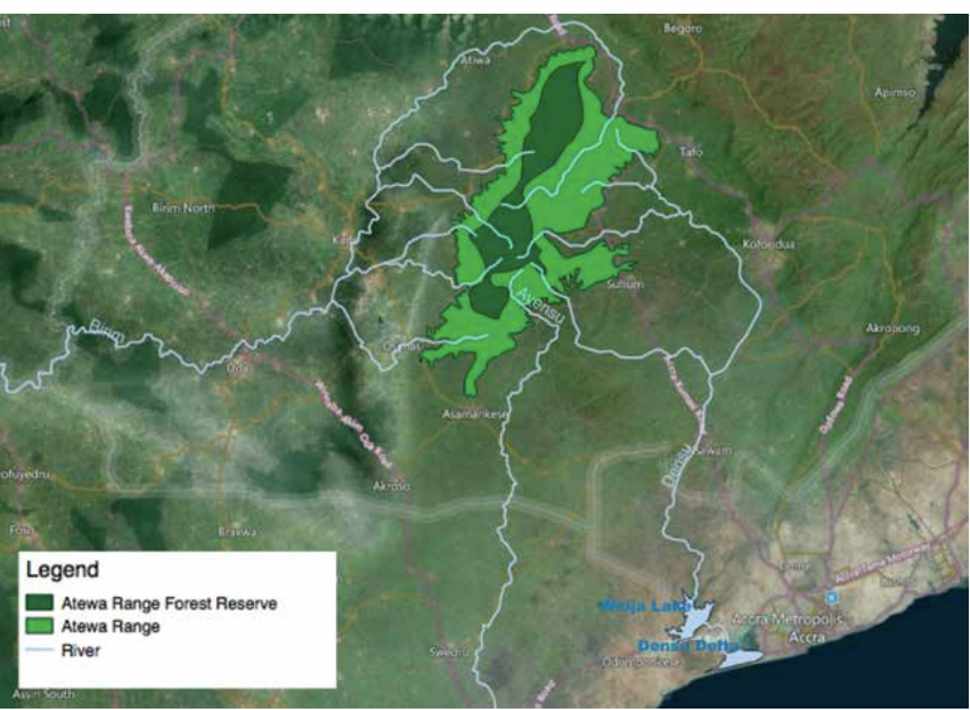
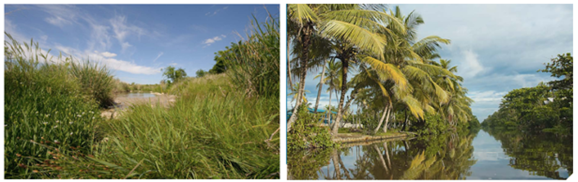
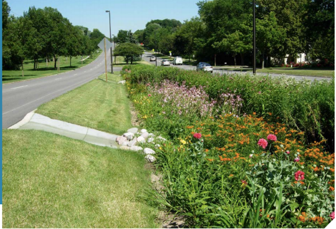
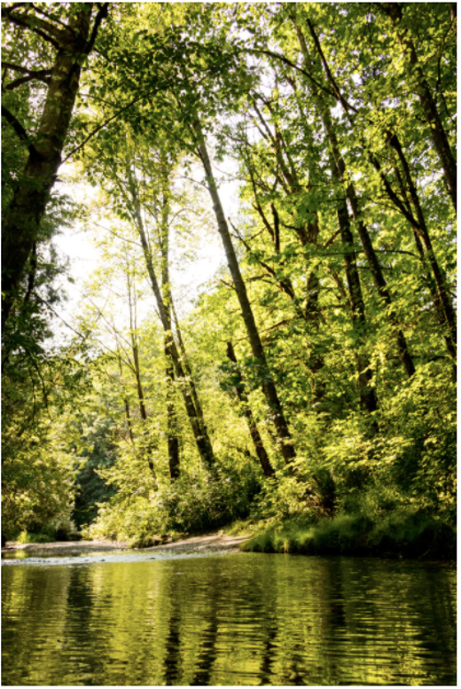
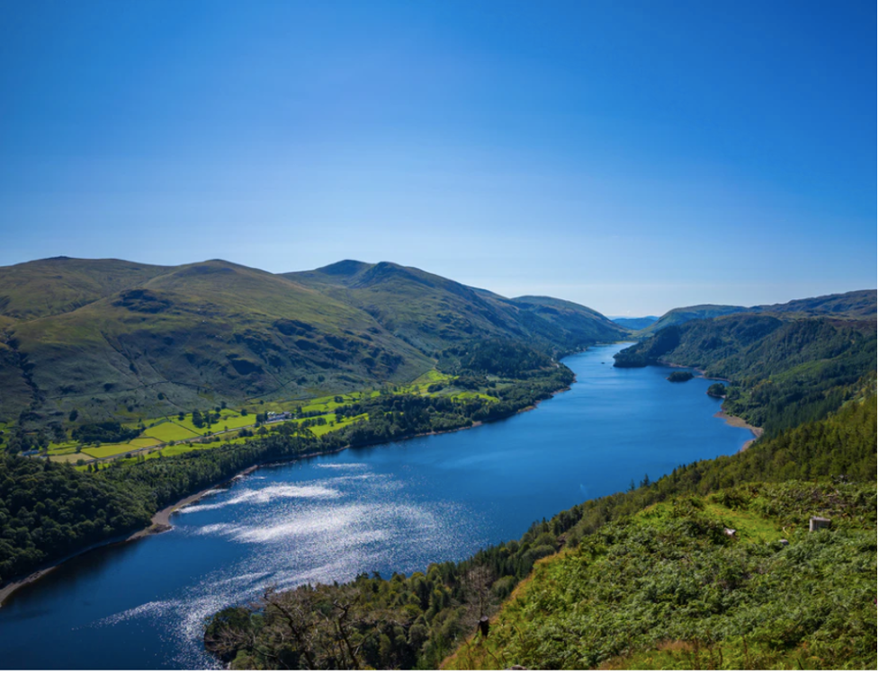

This lecture will consider how nature-based solutions (NbS) can be strategically incorporated to support the delivery of freshwater supply. A range of NbS services are illustrated, including their services for provisioning freshwater, enhancing water quality and preventing salination of water supplies.
To recall a range of nature-based solutions which can support the delivery of freshwater
To consider the ways in which nature-based solutions can enhance water quality
To recognise the value of integrating nature-based solutions with built infrastructure solutions for water supply.
Currently, one-third of people globally do not have access to safe drinking water, and 5.7 billion people could face some level of water scarcity by 2050 (United Nations 2020; Gurria 2020). A sufficient supply of quality freshwater is critical for societal functioning, for ensuring the 7.6 billion people globally have sufficient water for meeting basic domestic water needs (e.g. water for drinking, cooking and sanitation), for supporting agriculture and food supply (e.g. water for livestock or irrigation), and health and industrial activities (e.g. water for manufacturing) (Bertule et al. 2014).
Grey water infrastructure, including engineered water reservoirs, treatment plants and distribution pipes, have played a key role in meeting water-related development needs to date and will be an essential component of such strategies going forward (Tremolet and Karres 2020). However, as freshwater originates from the broader natural landscape of ecosystems, watersheds and underground aquifers, nature-based solutions have a critical role to play in in regulating water flows, water quality and ensuring sustainable supplies going forward (see Figures 17.1.1 and 17.1.2) (Bertule et al. 2014).

Figure 17.1.1: The wider natural landscape of watersheds, ecosystems and underground aquifers have a key role to play in meeting water-related needs. Photograph from Unsplash.
Through management and restoration of water-related ecosystems, NbS can complement built infrastructure and reduce requirements for engineered solutions, often at lower costs, while providing various co-benefits (Browder et al. 2019). For example, wetlands can filter contaminants, reducing requirements for engineered infrastructure such as water treatment plants, and provide co-benefits including carbon sequestration, air purification, aesthetic and recreational appeal, food production, ecotourism, and contribute to risk management (Bertule et al. 2014; Blicharska et al. 2019).
NbS can support coastal freshwater supplies by acting as a protective buffer and reducing saline intrusion of inland water supplies (Bertule et al. 2014). They can also enhance urban freshwater supplies, by capturing rainwater for reuse, and mitigating flooding which can contaminate urban water courses (Silva et al. 2020).
Furthermore, by mitigating climate impacts such as storm surges, NbS can prevent and reduce damage to built water infrastructure, such as water reservoirs (Kapos et al. 2019) (see Lecture 16).

Figure 17.1.2: Nature-based solutions for water regulation (Cohen-Shacham et al. 2016)
Table 17.1.1: Examples of NbS and services for water provision. Where these ecosystem functions have been degraded or lost, water providers are likely to face increased costs to provide a regular supply of quality freshwater (Tremolet and Karres 2020; Bertule et al. 2014).
| Example nature-based solution | Example services |
|---|---|
| Protection of watersheds |
|
| Restoration and protection of upstream forests |
|
| Restoration, protection and management of riparian vegetation along rivers, including wetlands and floodplains |
|
| Reconnecting rivers to floodplains |
|
| Creation of green roofs and rainwater harvesting systems in urban areas |
|
| Creation of permeable pavements and green spaces in urban areas |
|
| Improved agricultural management practices |
|
| Protection of coastal ecosystems such as oyster and coral reefs and mangroves |
|
Nature-based solutions support freshwater provision through services including water infiltration and storage, recharging aquifers, ponds and wetlands (Bertule et al. 2014).
Watersheds and ecosystems located upstream and along watercourses have a critical role in ensuring water resources, through regulating runoff and peak flows. For example, Atewa Forest in Ghana has been cited for its services to ensuring water supply in downstream communities along the river systems which originate from the forest (Figure 17.1.3) (IUCN 2016). Located at the source of the Densu river, which supplies the Volta Reservoir and Weija dam, the forest regulates water supply to the capital city of Accra, and safeguards supplies in the face of drought.
Protection and management of Atewa forest provides benefits to engineered infrastructure, including reducing requirements for water discharges from the Weija dam (through regulating peak flows), reducing desilting requirements and costs, and reducing water treatment requirements.

Figure 17.1.3: Location of the Atewa Forest, at the source of the Ayensu, Birim and Densu Rivers which together provide water for 5 million people. Protecting the forest provides co-benefits, including biodiversity (e.g., internationally recognised coastal wetlands which are fed by the rivers), carbon sequestration, and supporting local livelihoods (IUCN 2016).
Wetlands and floodplains can also support water provision through storing water and supporting infiltration into soils and groundwater supplies (e.g. underground aquifers). For example, seasonal flooding of rivers in north-east Ghana recharges wetlands and ponds, which provide water for livestock (Mul et al. 2015). This has important impacts on livelihoods and the SDGs, as sales of livestock in these regions are used to pay for education, fuel for electricity, health costs, as well as providing a source of food to communities.
In urban areas, green roofs and rainwater harvesting systems can be incorporated into buildings for rainwater capture for domestic use, relieving pressure on urban water supplies (Enzi et al. 2017). They also provide key functions to cities, including delaying runoff during storms, and preventing contamination of urban water supplies due to sewer overflow.
A major challenge of meeting water-related development needs is ensuring and maintaining water quality (Bertule et al. 2014). Pollution of water supplies can occur from various point and non-point sources, including the inflow of organic pollutants from agricultural runoff, heavy metals which leach from landfills and industry, sedimentation of watercourses from erosion, and pollution from sewer overflows during flood events. This has implications for human health (e.g. water-borne diseases), terrestrial and marine ecosystems, and economic functioning (quality water underpins industrial functioning and water treatment can incur high costs).
NbS can play an important role in addressing these challenges, including reducing erosion and sedimentation within watercourses. For example, healthy and well-managed ecosystems on high-gradient terrain, along watercourses (riparian vegetation) and upstream of water systems can protect potential sediment sources (Bertule et al. 2014). NbS can stabilise and protect hill slopes, riverbanks and shorelines, reducing erosion, associated sedimentation and pollution of watercourses (see mini-lecture 16.3). This preserves the functionality of grey infrastructure such as water reservoirs, reduces dredging requirements, can increase grey infrastructure lifespans and result in lower costs to the sector (Browder et al. 2019).
Improved agricultural management (e.g. improved grazing, agroforestry) can contribute to soil stability and reduce sedimentation of water courses resulting from soil erosion on agricultural lands. For example, conversion of natural lands to cropland accounts for more than two-thirds of overall soil loss in Europe (Tremolet and Karres 2020).
Wetlands and reed ponds can support natural pollution filtration, via bioretention, infiltration and chemical conversion, by trapping and removing sediments, heavy metals and other pollutants from water supplies, which can protect groundwater from contamination (Figure 17.1.4) (Bertule et al. 2014; Gopal 1999).

Figure 17.1.4: Natural wetlands and reed ponds can contribute to enhanced water quality (Browder et al. 2019). The Muthurajawela integrated coastal wetland system in Sri Lanka (right) assimilates pollutants from domestic and industrial sources, ensuring quality water to downstream communities (Browder et al. 2019; Bertule et al. 2014)
Water harvesting systems on buildings (e.g. green roofs), and green spaces and permeable pavements in urban areas can reduce stormwater runoff and contamination of urban water supplies, including from sewer overflow (Figure 17.1.5) (Yao et al. 2015).

Figure 17.1.5: Bioswales can be implemented in urban areas to enhance water quality of urban water supplies, through capturing and storing rainfall and preventing stormwater runoff and overflow (Yao et al. 2015). Photograph from Bertule et al. (2014).
Water temperature directly and indirectly affects aquatic ecosystems and their ability to provide water purification services (Bertule et al. 2014). Thermal pollution occurs when the natural temperature of a water body is elevated (or sometimes reduced) due to human activities, such as waste heat from industrial activities (Bertule et al. 2014). NbS can help to mitigate thermal pollution through the provision of shade by riparian vegetation (Figure 17.1.6).

Figure 17.1.6: Riparian vegetation can provide shade to waterways and help to reduce thermal pollution (Bertule et al. 2014). Photograph from Unsplash.
NbS can also play an important role in contributing to or reducing water quality through biological control. For example, healthy ecosystems are considered to be more able to control pests, invasive species and waterborne diseases (Bertule et al. 2014).
Turbidity of watercourses is another challenge in water management (Tremolet and Karres 2020) and can create costly damage to water reservoirs, increased dredging requirements and downtime due to reduced reservoir storage capacity (Figure 17.1.7) (Browder et al. 2019). Reducing sedimentation of rivers and reservoirs can help combat turbidity. As such, NbS that stabilise soils, reduce runoff from floods, and reduce sedimentation of watercourses contribute to mitigating turbidity.

Figure 17.1.7: The Thirlmere reservoir in the UK had such high turbidity in 2015 that it was put out of service (Tremolet and Karres 2020). Photograph from Unsplash.
Improved agricultural management practices can provide benefits to the water sector, given that agricultural lands are a known cause of soil erosion and can lead to harmful algal blooms that may render water supplies unusable (Bertule et al. 2014). Planting hedgerows, cover crops and agroforestry systems can reduce sedimentation, while improved grazing land management can ensure functioning of natural ecosystems and can help to reduce the need for fertilisers that can cause algal blooms (Tremolet and Karres 2020).
Utilisation of ecosystems for biological control in pollution management requires expert knowledge about the ecological suitability of the ecosystems, to avoid unintended consequences. Water hyacinth, for instance, is an aquatic plant that is ideal for purification of waters in lagoons or ponds adjacent to waterways. However, it is often an invasive pest. Therefore, implementation of NbS for water quality control should be based on an understanding of the ecological context and suitability of the NbS, including its ability to assimilate pollutants (Honlah et al. 2019).
Coastal water supplies are likely to be impacted under future climate change as a result of saline intrusion by saltwater, as storm surges and coastal flooding increase in frequency and strength. Coastal NbS can help to safeguard potable water supplies by acting as a buffer zone (Bertule et al. 2014). For example, mangrove forests, dune and beach systems, coastal salt marshes and barrier oyster and coral reefs can protect coastal areas from erosion and saltwater intrusion, in similar ways as engineered solutions such as dykes and levees (Figure 17.1.8) (Kapos et al. 2019). This reduces the need for desalination water treatment.
Figure 17.1.8: Coastal ecosystems such as beaches and native vegetation can help to prevent terrestrial inundation of seawater and salination of water supplies. Photograph from Unsplash.
As discussed throughout the lecture, nature-based solutions can be used in conjunction with grey infrastructure to deliver significant results. Many types of NbS can be deployed to address key water challenges and enhance water security, independently or combined with grey infrastructure (Bertule et al. 2014). The role of NbS in contributing to water management will vary depending on the context, challenge and type of NbS used.
While service needs for freshwater may be localised to a smaller site e.g., a city, NbS need to be considered in the wider landscape context, for example at the level of the whole watershed or ridge-to-reef (IUCN 2020; Cohen-Shacham et al. 2016) (see lecture 18.2). It is also critical to consider the local context for NbS, including ecological suitability, to avoid unintended consequences which may undermine water supplies or result in other environmental or social impacts within or outside the project area (e.g. Shi et al. 2012; Bertule et al. 2014). For example, while reducing sedimentation of river courses can support potable water supply, it can impact biodiversity within rivers and in downstream deltas, such as the Densu Delta in Ghana (IUCN 2016).
Table 17.1.2: Integrating NbS can provide various benefits to water service providers. Examples are shown here (Tremolet and Karres 2020; Browder et al. 2019; Bertule et al. 2014).
| Benefit type | Example |
|---|---|
| Net cost savings | Cost savings for water providers can offset the costs of implementing NbS. Watershed degradation impacts drinking water for more than 700 million people, and costs global cities US$5.4 billion in water treatment annually. Worldwide, annual costs to replace lost reservoir storage capacity due to sedimentation—in the form of constructing new or raising existing dams— are estimated at $10 - $20 billion. |
| Reduced operation and maintenance costs | Water service providers typically rely on grey infrastructure and costly water treatment processes in order to deliver safe water supplies. NbS can reduce water pollution and lead to lower maintenance requirements and associated costs by water treatment plants. The Nature Conservancy estimated that a 10% reduction in sediment can result in a reduction of 2.6% in operation and maintenance costs for water providers. |
| Energy cost savings | Many water treatment processes rely on large quantities of energy. By reducing water treatment requirements, water providers can save on energy costs. |
| Capital cost savings | NbS such as forest restoration can provide an alternative to engineered infrastructure. For example, New York City, which gets its water supply from 3 watersheds (75% forested and privately owned) invested in a working forests pollution prevention programme in addition to existing agricultural management best practices to address watercourse pollution. This provided an alternative to building a $US8-10 billion water treatment plant. NbS can reduce requirements for additional materials such as flocculants in water treatment processes. For example, to address increasing sedimentation of water courses, water providers need to use greater quantities of water filtration materials such as flocculants, which requires additional capital investment compared to NbS. |
| Reduced asset damage | Turbidity from sedimentation in water courses can damage dams and reservoirs. By implementing NbS, damage can be prevented, and additional cost savings incurred through reduced dredging needs. |
| Resilience | NbS can increase the resilience of urban and other water supplies in the face of climate change. |
| Co-benefits | NbS generate various co-benefits, including improved air quality, aesthetic value and carbon sequestration. |
Freshwater supplies originate in the broader watershed and are impacted by ecosystems and land use practices within the wider landscape context. Through implementing NbS, such as the restoration of riparian ecosystems and improved agricultural management practices, NbS can provide various benefits to water service providers. These include regulation of freshwater flows, maintenance of water quality, reduction of turbidity, and prevention of saline intrusion. NbS can support water delivery in inland, coastal and urban areas, and provide various economic benefits to service providers, including through reduced requirements for engineered infrastructure, reduced maintenance needs and extending the lifespan of built assets.